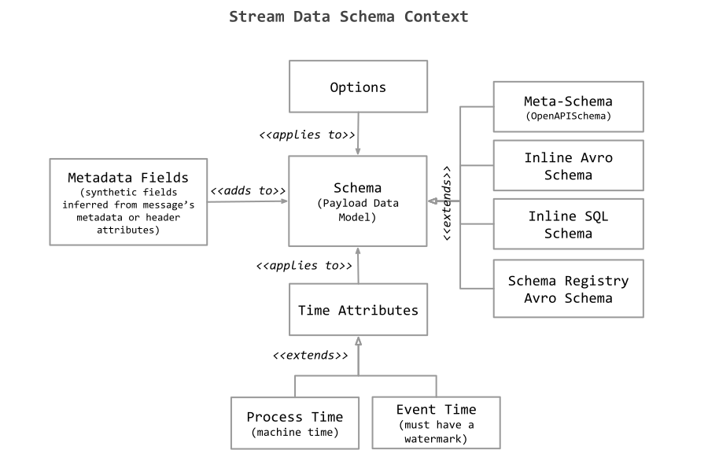

Stream Data Schema
The Stream CRDs can provide a data schema context to define the structure, time and serialization details of the messages they represent. The data schema context comprises a schema of the message payload along with additional time-attributes, metadata mappings and configuration options. The data schema describes the structure of the message payload. For a convenience, several, semantically equivalent, schema representations are supported. The time attributes augment can assign process or event time to schema in order to support streaming data processing. The metadata fields can extend the schema with additional, “synthetic”, fields that are extracted or computed from the message’s metadata. The options allow specifying some configuration details, such as serialization, encoding formats, or properties passed directly through the backend sql aggregation engines.
Following diagram illustrates the relationships between the Data Schema Context parts:

Schema (Payload Data Model)
The schema describes the structure of the message payload. It can be expressed as an Avro Schema, standard SQL/DDL or using the custom Stream MetaSchema (defined in the CRD and validated as OpenAPISchema). Additionally the payload schema can be retrieved from a remote schema registry such as Confluent Schema Registry using the Avro schema.
Following snippets show the same data structure using the different schema representations.
Note how the Meta-Schema representation extends the data schema content with metadata and time-attributes information.
For the other representations this information is applied in the outer Schema Data Context sections (see the examples below).
Time Attributes
Streaming data processing can process data based on different notions of time. Processing time refers to the machine’s system time that is executing the respective operation. Event time refers to the processing of streaming data based on timestamps that are attached to each row. The timestamps can encode when an event has happened.
Time attributes can be part of every Stream’s data schema. They are defined when creating the Stream CR. Once a time attribute is defined, it can be referenced as a field in Processor’s queries and used in time-based operations.
Event Time
Event time allows a Processor query to produce results based on timestamps in every message, allowing for consistent results despite out-of-order or late events. It also ensures the replayability of the results of the streaming pipeline when reading messages from persistent storage (such as Kafka).
The general syntax for defining Event Time field, assumes adding a timeAttributes entry only with name and watermark expression! (note without or empty watermark stands for Process Time field). You can mix Meta-Schema and general definitions. The general syntax precedes.
Processing Time
Processing time allows the streaming processing to produce results based on the time of the local machine. It is the simplest notion of time, but it will generate non-deterministic results. Processing time does not require timestamp extraction or watermark generation.
There are two ways to define a processing time attribute.
The general syntax for defining Process Time field, assumes adding a timeAttributes entry only with name but without watermark! You can mix Meta-Schema and general definitions. In case of conflict the general syntax precedes.
Metadata
Represents a special class of schema fields that are inferred or computed from the message’s metadata. For example the message’s timestamp or headers can be used as schema fields.
Options
Various serialization/deserialization configurations, remote system connection or implementation optimizations.
The streaming runtime will try to hide as much as possible those details from the end user by inferring them from the Stream or ClusterStream statuses or assume some reasonable defaults for the common use cases.
Yet the end user can use the Options section to further configure/optimize or override the defaults.
Primary Key
Primary key constraint is a hint for Streaming processing to leverage for optimizations. It indicates that a field or a set of fields of a data schema are unique and they do not contain null. Neither of the fields in a primary key can be nullable.
dataSchemaContext:
inline:
Schema: <inline-schema>
#(or
schema: <meta-schema> )
…
primaryKey: [ "song_id", "genre" ]
Schema Formats Description
Meta-Schema Format
Informal description of the Meta-Schema format.
| YAML | Default | Description |
|---|---|---|
namespace: <my.name.space> |
Schema namespace. | |
name: <schema-name> |
Schema name unique in the namespace. | |
fields.name: <field-name> |
Schema name unique in the namespace. | |
fields.type: <field-type> |
Same as Avro primitive types plus one additional type: proctime. Later indicates that this is a Process time field. Also you can use the shortcut format <type>_<logicalType> to set both the type and the logical type attributes of the field. |
|
fields.logicalType: <filed-logical-type> |
Same as Avro’s logicalTypes. | |
fields.optional: <true or false> |
false | If this field is optional in the schema. |
metadata.from: <message metadata> |
field.name | Name of the massage metadata attributes to be used as value of the metadata field. This is dependent on the type of the input. For example for Kafka we can use the message timestamp as a metadata field. |
metadata.readonly: <true/false > |
true | Whenever this metadata field can be overridden when sending a new message to the binder. |
watermark: <expression> |
true | The watermark expression. It indicates that the field used in the expression is an Event-Time field. |
Inline-SQL Format
Uses standard ANSI SQL CREATE TABLE statements to define the data schema. The schema definition may look like this:
CREATE TABLE SongPlays (
`song_id` BIGINT NOT NULL,
`album` STRING,
`genre` STRING NOT NULL,
`duration` BIGINT,
`event_time` TIMESTAMP(3) NOT NULL
)
- Table name stands for Schema name.
- Table column names represent the schema field names.
- The table column types (standard SQL types) represent the field types.
- The “NOT NULL” type constraint indicates if the schema field is optional or not.
- The column types used as Time Attribute MUST use the TIMESTAMP(3) type.
No metadata or time attributes fields are defined in this schema.
Inline-Avro Format
Follows the Avro 1.11.0 schema specification. Uses the JSON representation.
{
"type" : "record",
"name" : "SongPlays",
"namespace" : "net.tzolov.poc.playsongs.avro",
"fields" : [{
"name" : "song_id",
"type" : "long"
}, {
"name" : "album",
"type" : [ "null", "string" ]
}, {
"name" : "artist",
"type" : [ "null", "string" ]
}, {
"name" : "name",
"type" : [ "null", "string" ]
}, {
"name" : "genre",
"type" : "string"
}, {
"name" : "duration",
"type" : [ "null", "long" ]
}, {
"name" : "event_time",
"type" : {
"type" : "long",
"logicalType" : "timestamp-millis"
}
}]
}
Note the same format is used for the schemas stored in Schema-Registries.
(N.B. Streaming runtime converts internally all different representations into Avro schema).
Examples
Here is an example payload schema represented using the Meta-Schema, Inline-Avro, Inline-SQL representation.
Meta-Schema
dataSchemaContext:
schema:
namespace: net.tzolov.poc.playsongs.avro
name: PlayEvents
fields:
- name: song_id
type: long
- name: duration
type: long
optional: true
- name: event_time
type: long_timestamp-millis
metadata:
from: timestamp
readonly: true
watermark: "`event_time`- INTERVAL '30' SECONDS"
options:
ddl.scan.startup.mode: earliest-offset
Inline-Avro
dataSchemaContext:
inline:
type: avro
schema: |
{
"type" : "record",
"name" : "PlayEvents",
"namespace" : "net.tzolov.poc.playsongs.avro",
"fields" : [ {
"name" : "song_id",
"type" : "long"
}, {
"name" : "duration",
"type" : [ "null", "long" ]
} ]
}
metadataFields:
- name: event_time
type: long_timestamp-millis
metadata:
from: timestamp
readonly: true
timeAttributes:
- name: event_time
watermark: "`event_time` - INTERVAL '30' SECONDS"
options:
ddl.scan.startup.mode: earliest-offset
Note that the Schema Registry referenced schema are special case of the Inline-Avro:
dataSchemaContext:
inline:
type: avro-confluent
schema:<schema-registry-url>/subjects/<topic>-value/versions/latest
metadataFields:
- name: event_time
type: long_timestamp-millis
metadata:
from: timestamp
readonly: true
timeAttributes:
- name: event_time
watermark: "`event_time` - INTERVAL '30' SECONDS"
options:
ddl.scan.startup.mode: earliest-offset
If only the type: avro-confluent attributed is provided, with empty schema value then the streaming runtime will default the schema value to:
Inline-SQL
(using a plain ANSI compliant SQL)
dataSchemaContext:
inline:
type: sql
schema: |
CREATE TABLE PlayEvents (
`song_id` BIGINT NOT NULL,
`duration` BIGINT
)
metadataFields:
- name: event_time
type: long_timestamp-millis
metadata:
from: timestamp
readonly: true
timeAttributes:
- name: event_time
watermark: "`event_time` - INTERVAL '30' SECONDS"
options:
ddl.scan.startup.mode: earliest-offset
The above three data schema representations are semantically identical and for each of them the Processor will generate exactly the same executable physical schema. In case of Apache Flink, the processor will generate the following CREATE TABLE DDL:
CREATE TABLE PlayEvents (
`song_id` BIGINT NOT NULL,
`duration` BIGINT,
`the_kafka_key` STRING,
`event_time`TIMESTAMP(3) NOT NULL METADATA FROM 'timestamp' VIRTUAL,
WATERMARK FOR `event_time` AS `event_time` - INTERVAL '30' SECONDS
) WITH (
'properties.bootstrap.servers' = 'kafka.default.svc.cluster.local:9092',
'connector' = 'kafka',
'value.format' = 'avro-confluent',
'key.format' = 'raw',
'value.fields-include' = 'EXCEPT_KEY',
'topic' = 'kafka-stream-playevents',
'value.avro-confluent.url' = 'http://s-registry.default.svc.cluster.local:8081',
'key.fields' = 'the_kafka_key'
)
Note how the metadata and the time attributes are mapped. Also most of the options (in the WITH sections) are inferred from the Stream’s status server address and some defaults.